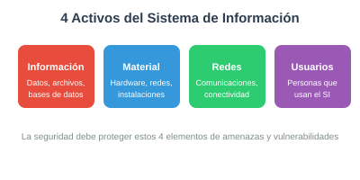
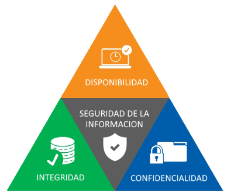

1.1 Objetivos de la Seguridad Informática
0226 · UP1: Fundamentos de la SI
Los 4 activos que debemos proteger
Toda organización posee sistemas de información compuestos por elementos que es necesario proteger. Estos son los 4 activos fundamentales:

- Información: datos, archivos, bases de datos. Es el activo más valioso.
- Material: hardware, servidores, dispositivos de red, instalaciones físicas.
- Redes y comunicaciones: infraestructura de conectividad, Internet, Intranet.
- Usuarios: las personas que acceden y utilizan el sistema. El eslabón más débil.
Las 5 características de un SI seguro
Según los estándares actuales (ISO 27001), la seguridad se mide por la preservación de estas propiedades:

| Característica | Significado | Ejemplo |
|---|---|---|
| Confidencialidad | Solo los autorizados acceden a la información | Cifrado de archivos, contraseñas |
| Integridad | La información no es modificada sin autorización | Hashes, firmas digitales |
| Disponibilidad | El acceso está disponible cuando se necesita | SAI, copias de seguridad, redundancia |
| Autenticación | Se verifica la identidad del usuario | Certificados, tokens, biométricos |
| Irrefutabilidad | No se puede negar haber realizado una acción | Firma digital, logs |
Mecanismos de protección
Para lograr estos objetivos utilizamos diversas herramientas:
- Autenticación: verificar quién es el usuario.
- Autorización: controlar qué puede hacer cada usuario.
- SAI: garantizar suministro eléctrico continuo.
- Encriptación: ocultar información sensible.
- Backups: copias de seguridad periódicas.
- RAID: redundancia de discos.
- Antivirus: detección de software malicioso.
- Firewalls: control de tráfico de red.
- Proxys: intermediarios entre redes.
Filosofía de seguridad: "Todo lo que no está permitido debe estar prohibido". Es decir, por defecto se deniega todo acceso y solo se permiten las acciones explícitamente autorizadas.